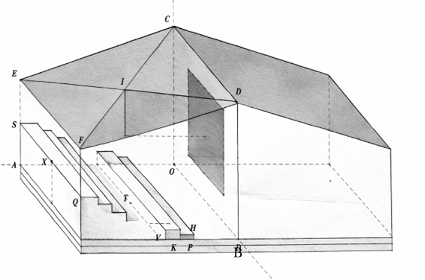
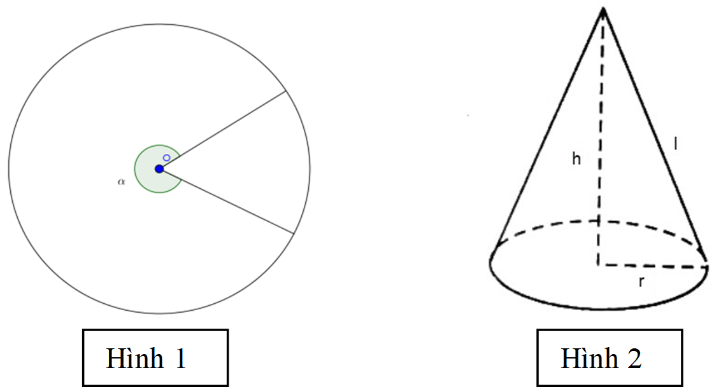

Câu 1: Mẫu số liệu thống kê điểm trung bình cuối học kì I môn Toán cuả một số học sinh lớp 12 được cho ở bảng sau:
| Khoảng điểm |
$[6,5;7)$ |
$[7;7,5)$ |
$[7,5;8)$ |
$[8;8,5)$ |
$[8,5;9)$ |
$[9;9,5)$ |
$[9,5;10)$ |
| Tần số |
8 |
10 |
16 |
24 |
13 |
7 |
4 |
Khoảng biến thiên cuả mẫu số liệu ghép nhóm trên là
Câu 12: Cho hai mẫu số liệu ghép nhóm A và B có bảng tần số ghép nhóm như sau
| Nhóm A |
[1,6;1,8) |
[1,8;2,0) |
[2,0;2,2) |
[2,2;2,4) |
[2,4;2,6) |
| Tần số |
12 |
25 |
18 |
10 |
2 |
| Nhóm B |
[2,0;2,2) |
[2,2;2,4) |
[2,4;2,6) |
[2,6;2,8) |
[2,8;3,0) |
| Tần số |
24 |
50 |
36 |
20 |
4 |
Gọi $S_{A}^{2}$ và $S_{B}^{2}$ lần lượt là phương sai của mẫu số liệu ghép nhóm $A$ và $B$. Khẳng định nào sau đây đúng?
Câu 1: Ông A. muốn xây một cái bể chứa nước bằng bê-tông dạng hình hộp chữ nhật có nắp, đáy là hình vuông. Bể cần chứa được đúng $0{,}5\,\text{m}^3$ nước.Gọi độ dài cạnh đáy của bể là $x\,(\text{dm})$,
biết rằng chi phí nguyên vật liệu xây dựng mỗi mét vuông diện tích bề mặt là như nhau và diện tích mặt cắt của các ống nước để dẫn nước vào & ra là không đáng kể.
Câu 2: Một tòa nhà được thiết kế để làm 2 phòng dạy học có trang bị máy chiếu. Mái nhà là dạng mái vát hình chữ nhật $CDFE$ như hình vẽ. Chiều dài của mỗi phòng học là $OA=40m$ và chiều rộng là $OB=30m$, chiều cao các bức tường $BD=12m,EA=8m$. Từ vị trí P cách B một khoảng $10m$, người ta xây các bậc thang cao dần về phía cuối của phòng học để đặt các dãy bàn ghế học sinh trên các bậc thang đó. Chiều rộng mỗi bậc thang là $3m$ và chiều cao mỗi bậc thang là $30cm$. Chủ tòa nhà muốn lắp giá treo máy chiếu tại vị trí $I$ là giao điểm của $DE$ và $CF$ như hình vẽ, vuông góc với mặt sàn sao cho không vướng vào đầu học sinh khi học sinh đứng tại bậc thang ngay dưới máy chiếu (chiều cao học sinh đó là $1,8m$) và cũng không che khuất tầm nhìn của học sinh ngồi ở hàng ghế sau cùng, tại vị trí $X$ trung điểm đoạn $SQ$ theo phương vuông góc bức tường $OBDC$(chiều cao mắt học sinh so với bậc thang tại đó là $1,3m$). Xét hệ trục tọa độ $Oxyz$, với $O$là gốc tọa độ, điểm $A\in Ox,B\in Oy,C\in Oz$có tọa độ không âm, đơn vị trên mỗi trục là mét. Các mệnh đề sau đúng hay sai?

Câu 3: Thống kê 100 lần ông Minh đi xe buýt được cho trong bảng dưới đây:
| Thời gian (phút) |
$[15;18)$ |
$[18;21)$ |
$[21;24)$ |
$[24;27)$ |
$[27;30)$ |
$[30;33)$ |
| Số lượt |
22 |
38 |
27 |
8 |
4 |
1 |
Các khẳng định sau là đúng hay sai?
Câu 4: Hàm số $y=f(x)=\frac{3x+5}{2x+2}$.
Câu 2:
Một nhóm học sinh thiết kế một chiếc lều dã ngoại có dạng hình nón theo cách sau:
Từ một tấm bạt hình tròn có diện tích $4{,}84\pi\,\text{m}^2$,
nhóm cắt lấy một hình quạt có góc ở tâm là
$\alpha\,(0<\alpha<2\pi)$ (như Hình 1)
để làm thành mặt xung quanh của lều (như Hình 2).
Sau đó, nhóm dùng một tấm bạt chống thấm cắt thành hình tròn để trải kín đáy lều.
Biết chi phí loại bạt làm mặt xung quanh lều là
$100\,000$ đồng$/\text{m}^2$
và chi phí loại bạt làm đáy lều là
$150\,000$ đồng$/\text{m}^2$.
Giả sử phần bạt thừa sau khi cắt không tính vào chi phí
và kích thước các mép nối không đáng kể.
Để thiết kế được chiếc lều có diện tích đáy lớn nhất
với tổng chi phí không vượt quá $2\,300\,000$ đồng,
chiều cao $h$ của lều bằng bao nhiêu mét?
(kết quả làm tròn đến hàng phần trăm).
